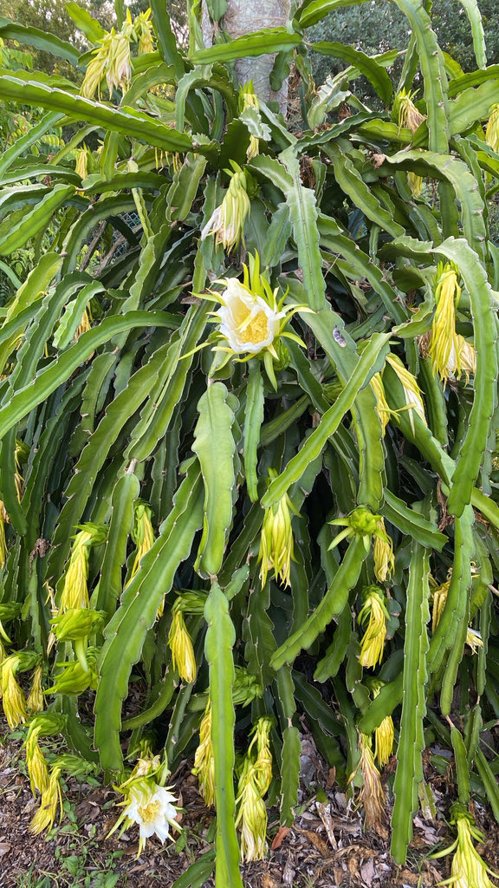

- The flower opens once, at night, and is gone by morning. It is among the largest cactus flowers in the world — up to a foot across — white, fragrant, and pollinated by bats and moths while most visitors are asleep.
- The fruit is the dragon fruit sold in supermarkets: red-skinned with white or magenta flesh and tiny black seeds. A climbing cactus producing a commercial fruit crop is unusual enough to warrant attention.
- The name "night-blooming cereus" is shared by at least eight unrelated cactus species. This particular one — Selenicereus undatus — is the commercially significant dragon fruit plant.
- Non-toxic to dogs, cats, and horses.
Non-native. Native to Mexico, Central America, and northern South America. Now cultivated throughout the tropics as a commercial fruit crop, particularly in Vietnam, Thailand, and the Philippines. Member of Cactaceae — the cactus family.
- The nighttime flowering event is the defining feature of this plant, and it happens entirely without an audience. The flower — up to a foot across, white, intensely fragrant — opens after dark and closes permanently by morning. Bats and moths do the pollination work while the park is closed. Visitors who arrive the next morning find only the wilted remains.
- The fruit that follows is the dragon fruit sold in supermarkets and juice bars worldwide: a red-skinned, scale-patterned fruit with sweet white or magenta flesh speckled with tiny black seeds. The commercial cultivation of this plant — primarily in Southeast Asia, where it was introduced from the Americas — has become a significant agricultural industry.
- The plant itself is a climbing epiphytic cactus, using aerial roots to cling to structures and trees rather than growing from soil in the desert manner of most familiar cacti. The three-angled green stems are the year-round identification feature.
Bats and moths are the primary pollinators — the flower structure, timing, size, and fragrance are all calibrated for nocturnal visitors. The open bowl shape accommodates bats; the intense fragrance broadcasts in the dark.
Ripe fruit is eaten by birds and small mammals. Non-toxic to people, dogs, cats, and horses — one of the cleaner safety profiles in the cactus family.
Very large, white, tubular opening to a broad bowl, up to 12 inches across. Open only at night, close and wilt by morning. Intensely fragrant. Bat and moth pollinated.
The commercial dragon fruit: oval, red-skinned with prominent green-tipped scales. White or magenta flesh with tiny black seeds. Sweet, mild flavor. Develops from pollinated flowers.
Three-angled (triangular in cross-section), green, sprawling and climbing. Aerial roots along the stems attach to host surfaces. No true leaves — the green stems do all photosynthesis.
Small, clustered at the notches along the stem angles. Less formidable than desert cacti.
The three-angled green climbing stems are the year-round marker. On a morning after blooming, look for wilted white flower remains. Ripe fruit hanging from stems is unmistakable if present.
Dragon fruit is fully edible and sold worldwide — the sweet mild flesh, the seeds, and even the flowers are all eaten.
It's non-toxic to people, and listed as non-toxic to dogs, cats, and horses.


- © David Vanderbilt (CC-BY-NC), via iNaturalist
- © Cole Guyton (CC-BY-NC), via iNaturalist
- © Greg Bratlee (CC-BY-NC), via iNaturalist
- © Maria Escobar (CC-BY-NC), via iNaturalist
- © Denise Sosa (CC-BY-NC), via iNaturalist
- © Rob Carr (CC-BY-NC), via iNaturalist